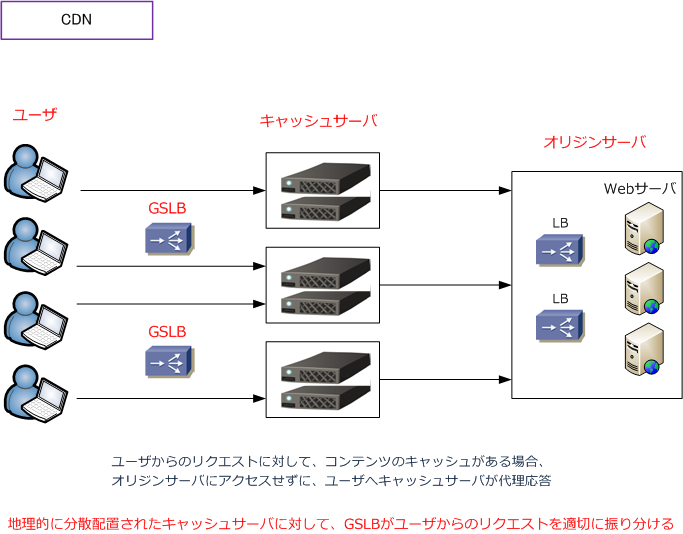

CDN （ Contents Delivery Network ）
CDN（Contents Delivery Network）とは
CDNとは、Webコンテンツを効率よく迅速にユーザに配信するための仕組みのことです。CDNでは各地に 配置された数多くのキャッシュサーバにWebコンテンツを一時的にキャッシュさせて、GSLBの機能により リクエストしたユーザから近い場所にあるキャッシュサーバからコンテンツを配信することにより、迅速で 効率の良いWebコンテンツの配信を実現しています。

CDNは、オリジンサーバ、キャッシュサーバ、GSLBの大きく3つのコンポーネントにより構成されます。
| CDNの構成要素 | 説明 |
|---|---|
| オリジンサーバ | オリジナルのWebコンテンツを提供するWebサーバ。元のデータを保有しているWebサーバ。 |
| キャッシュサーバ | オリジンサーバから配信されるデータをキャッシュするサーバ。CDN事業者が提供する地理的に 分散配置されたエッジサーバ。ユーザからのリクエストに代理応答して、応答速度の向上を担う。 |
| GSLB | 分散配置されたキャッシュサーバにユーザからのリクエストを適切に振り分ける機能のこと。 GSLB機能を有する広域負荷分散装置により、CDNの効率やパフォーマンスを最大化にする。 |
CDN導入によりキャッシュサーバがオリジンサーバの代理応答してくれることから、オリジンサーバへの アクセスが低減することで負荷を大幅軽減できるだけでなく、コンテンツの表示・配信速度が向上します。 また、Webサーバに大量な不正なリクエストを送信されても、分散配置されたキャッシュサーバがそれを 受け取れることになることから、DoS/DDoS攻撃に対して高い耐性を持つことにもなります。